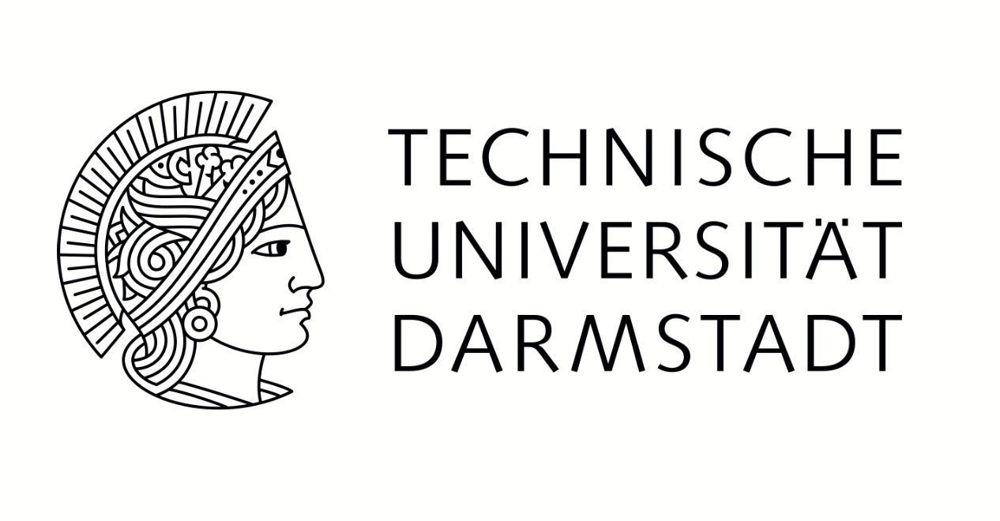
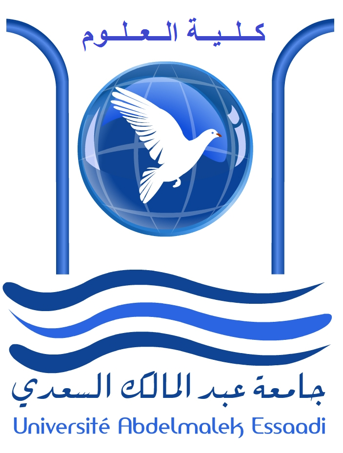
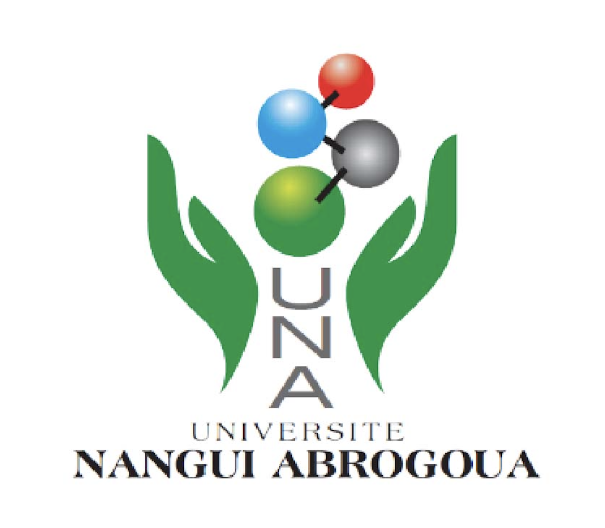
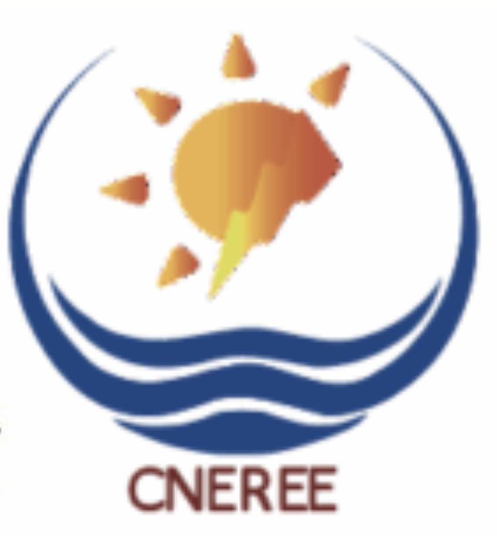
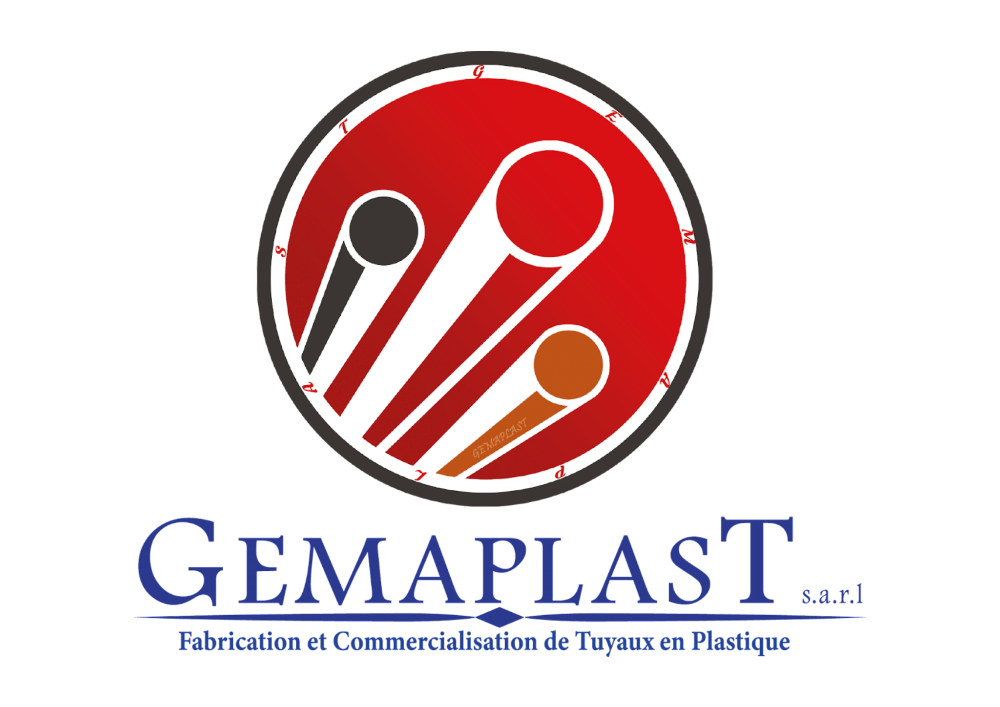
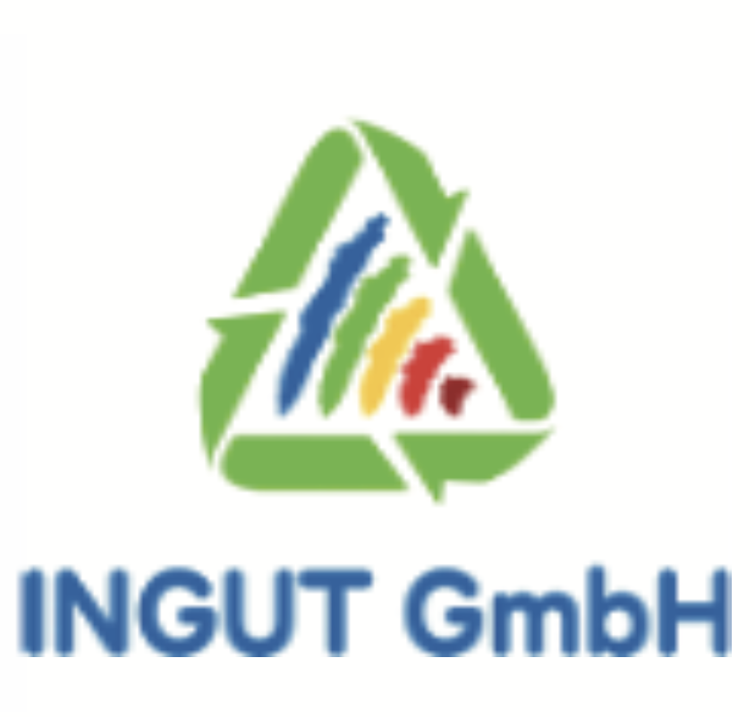
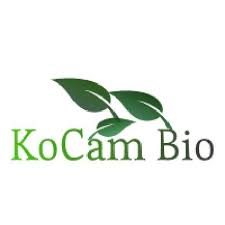
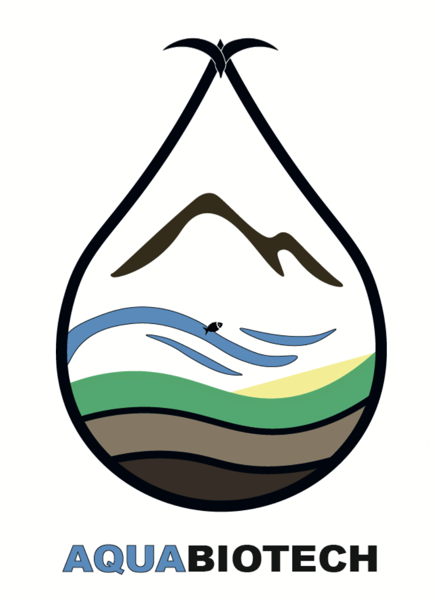

International Workshop • Water & Wastewater
Advanced & Sustainable Technologies in Water and Wastewater Management
Bridging innovation between academia, industry, and policy makers.
Dates
11–13 November 2025
Venue
Faculty of Sciences Semlalia (FSSM), Marrakech
Program
Organization Team
Posters
Poster Session I — W24 AFRICA Partners
- Eco-Efficient irrigation systems: Synergistic effects of treated wastewater and biochar on tomato growth and soil health — M.Sc. Houria RYAH (UCA, Marrakech)
- Assessment of Secondary Treated Wastewater as an Alternative Nutrient Source for Rocket (Eruca sativa) in a Low-Cost Hydroponic System — M.Sc. Fayrouz OUKEHY (UCA, Marrakech)
- Assessment of the treatment efficiency of a prototype activated sludge process applied to secondary processing wastewater — M.Sc. Ilhame ZAHOUANI (UCA, Marrakech)
- Tertiary treatment of secondary municipal effluent using iron-carbon microelectrolysis-integrated constructed wetlands — M.Sc. Sara MRHARI DERDAG (UCA, Marrakech)
- Reuse of treated domestic wastewater by hybrid MSL technology for crop irrigation — Dr. Khadija ZIDAN (UIZ, Agadir)
Poster Session II
- Hybrid SAPs Based on CMC and Alginate for Efficient Water Use in Agriculture — M.Sc. Achraf BERRADI (CNEREE, Marrakech)
- Water decontamination through degradation of organic pollutants using phosphate-based glass-ceramics — M.Sc. Chaima ASSAMADI (UCA, Marrakech)
- Valorization of Olive Mill Wastewater via Batch Anaerobic Digestion and Continuous Resin Adsorption: Kinetic Modeling — M.Sc. Abdessadek ESSADEK (UMP, Oujda)
- Eco-friendly phosphorylation of cellulose and starch for remediation of dye/metal contaminated water — M.Sc. Abdelkarim BELASRI (UM6P, Benguerir)
- Effect of alternating fresh water and treated wastewater irrigation on Koroneiki olive trees — Dr. Abdelali AHMALI (UCA, Marrakech)
Poster Session III
- Detection and Analysis of Pharmaceutical Residues by LC‑MS/MS in treated wastewater: case of Tunisia — M.Sc. Hana MECHMECH (Tunis)
- Life cycle assessment of membrane‑based desalination technologies under Moroccan energy sources — M.Sc. Yassine SOUMBATI (UM6P, Benguerir)
- Modeling the Impact of Urban and Industrial Pollution on Surface‑Water Quality in Intermittent Rivers — Dr. Abdellilah BOURIQI (UCA, Marrakech)
- Artisanal Fishers as Environmental Sentinels: Linking Local Knowledge to Industrial Pollution — M.Sc. Hafssa CHOUKRI (UCA, Safi)
- Characterization, Identification, and Mitigation of Trihalomethanes in Drinking Water Using Graphene Oxide — M.Sc. Maroua CHADDAD (UCA, Marrakech)
Poster Session IV
- Enhancing MCFA Production via Co‑fermentation of Landfill Leachate and Liquid Sewage Sludge with Targeted Donors — M.Sc. Soufia OUMENA (UAE, Tétouan)
- Project: Green Waste and Water Management for a Sustainable Africa (W²4Africa) — Dr. Alessio CAMPITELLI (TU Darmstadt)
- Utilization of Diatoms for Industrial Wastewater Treatment — M.Sc. Sara EL HAMJI (UCA, Marrakech)
- Industrial Wastewater Treatment using Microalgae and Biomass Valorization — M.Sc. Hiba ZEGROUD (CNEREE, Marrakech)
- Organic Matter Degradation via Co‑digestion of Landfill Leachate and Brewery Waste Water under Controlled Parameters — Ms. Salma MNISSER • Ms. Imane SNIBA (UCA, Marrakech)
- Co‑Digesting Gracilaria sp. with Cattle Slurry in a 20 m³ Dome Digester — M.Sc. Abdessadek ESSADEK (UMP, Oujda)
Partners & Universities
Universities




Partners






Venue
Faculty of Sciences Semlalia (FSSM)
Cadi Ayyad University — Marrakech, Morocco
Seminar Room (ground floor).
Open in Google MapsLocalization Map
All expected locations (hotel, seminar room, excursions, etc.).
Open interactive mapDownloads
Get in touch
Organization Committee
Email the Committee